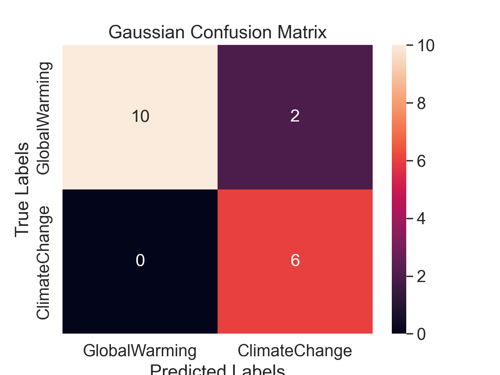
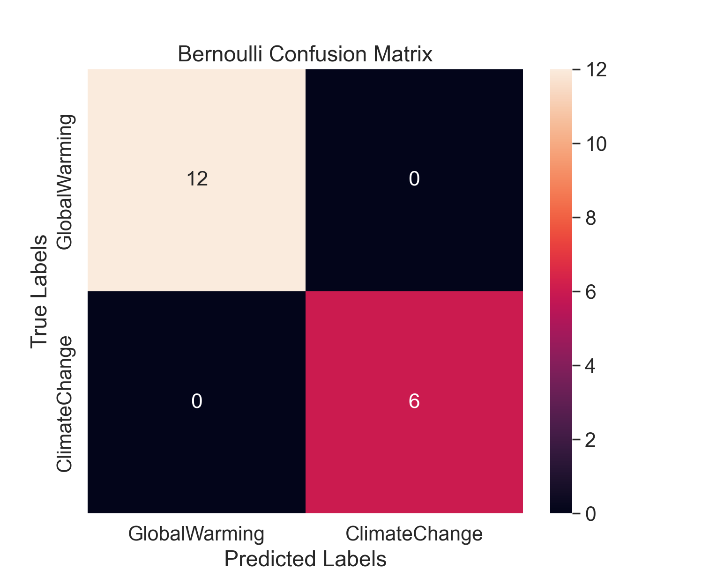
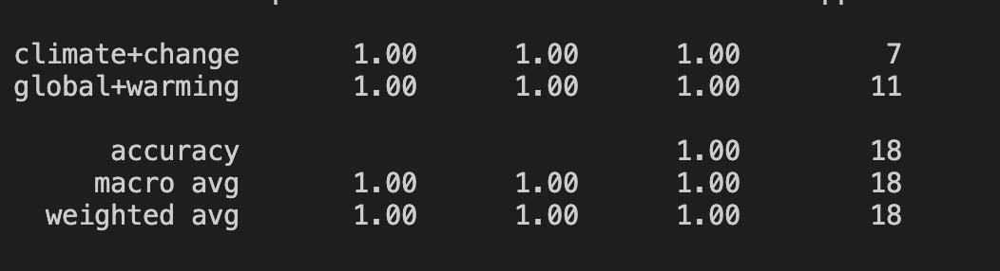
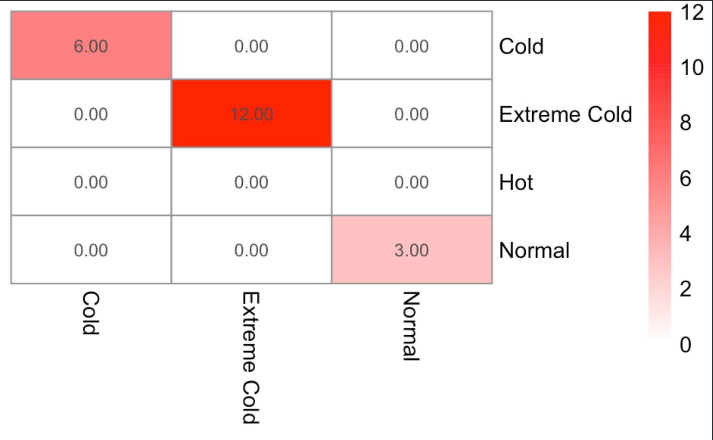
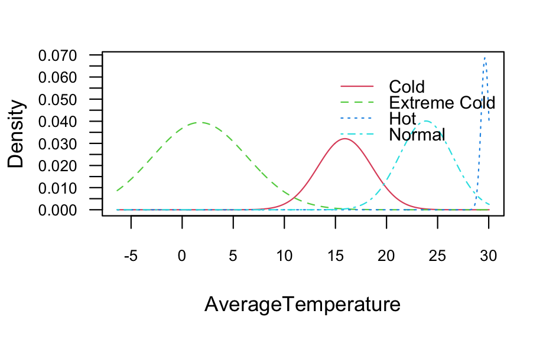
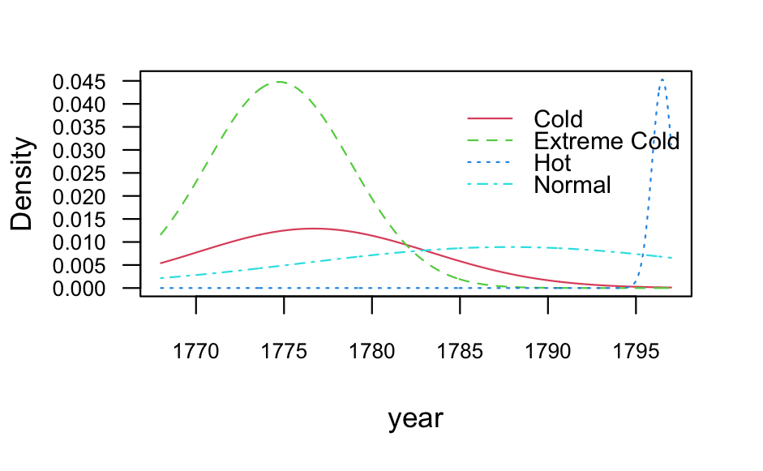

NAIVE BAYES (NB).
What is Naive Bayes (NB)?
The naive bayes classifier is an machine learning algorithm that is based on probabilsitic methodologies. The underlying formila based on this classification model is bayes theorem. The therom essentially states that the probability of A happening given that B already occured. In other words, we're trying to prove the evidence of B based on A, with the assumption that the two events are independent.

Source: Chris Alben
NAIVE BAYES WITH PYTHON
Python - NB Code
The code for performing Naive Bayes in Python can be found below (incldues both NB and SVM; commented out the NB portion):
CODE: Python - NB
Python - NB Data
The raw data collected can be found below. The news articles are labeled by the key word used to generate the articles (labels).

This is a screenshot of the raw data gathered from the NewsAPI.
Download python_uncleaned.csvThe cleaning has been done via removing stop words and any meaningless words. Then using Count Vectorizer, a cleaned csv file was created created with relevant words as the variables (columns) and the topics as the labels (first column for each row).

This is a screenshot of the cleaned NewsAPI data.
Download python_cleaned.csvThe code for cleaning the dataset can be found below (first portion):
CODE: Python - NEWS API Cleaning
Python - NB Results

This is a screenshot of confusion matrix for NB - Gaussian.

This is a screenshot of the results for NB - Gaussian.

This is a screenshot of confusion matrix for NB - Bernoulli.
This is a screenshot of the results for NB - Bernoulli.

This is a screenshot of the most important features for NB.
Based on the two confusion matrix, we can see that the model did a fantastic job classifying the categroies based on the average temperature, with a 94% and 100%. However, with the Bernoulli NB classifer, we have to take it with a grain of salt that there's no way the model predicted it with 100%. The model was probably overfitted as well as another amalagmation of various things that make it seem that the classifier is 100%.
Looking at the top features, we can see the features with the 10 highest levels of importance in predicting the correct label. We can notice words such as "climate", "global", "oil", and "gas" as the words which are essential to predicting the lables. This makes sense, as the these worlds would be common when classfying terms based on temperature from global warming and climate change.
Python - NB Conclusion
It can be said that Naive Bayes is a very powerful classifer when predicting labels, which can be seen pervasively here. Specifically for text data, it was seen that labeling text based on news headlines for global warming and climate change that it has a 90%+ accuracy when predicting the model. the text data used in this section is short, and there's always scope for improvement. We can also note that there are some crucial words which are used to predict these classifictions, based on the feature importance bar graph. High accuracy can be reached, however not at 100% as the accuracy predicted by the Bernoulli. Overall, we can confidently say that there is a high accuracy between the realtionship of the words we use within a news headline and the specific topic of the word.
NAIVE BAYES WITH R
R - NB Code
CODE: R - NB
R - NB Data
The data for creating the decision trees in R was gathered from the data cleaining tab, specifically the numeric section. This raw data showcases the global land temperature by country. The dataset spans across over a hundred countries as well as weather points dating back from the 1750's. The temperature data presented here is in Celsius. Feature extraction was performed to get the data of countries USA and India. To accomplish this in R, the data was read in by getting the country code 'USA' and 'India'. Next, the date data was converted to months and years as features in the dataset along with the month number correlating to the abbreviation. Then, applying another feature extraction, the celsius data was converted to fahrenheit (by the formula 9/5*C + 32). Next, using a simple key of very cold to very hot, based on the fahrenheit scale, a feature was made to determine the "sense" of the weather. Finally, this transform was outputted as a csv.
USA and India climate dataset.

This is a screenshot of the raw data which includes both USA and India.
Download small_sample.csv
R - NB Results

R - NB Confusion Matrix.

R - Accuracy.
R - Category features based on AverageTemperature.

R - Category features based on AverageTemperature Uncetaintity.
R - Category features based on year.
R - NB Conclusion
After looking at the confusion matrix, we can infer that there is a strong correlation between the average temperature and the category. Looking at the classificaiton reported generated by R, we can see that there was a accuracy of 1. Although the value is perfect, it can infered that there is a strong correlation between the category of the temperature and the avergate temperature. The high accuracy rate is most probably due to overfitting, and a way around this is to tune the model less so that this problem doesn't occur again. And, looking at the features as well as the PDF of the Naive Bayes, we can notice how the density ranges acorss all the vairous elements of the dataset. We can conclude that the highest variance in the data is based on teh AverageTemperatureUncertainty as each country would have a different temperature change based on the different climate regions. Finally, another conclusion we can gathere from this data is how closely linkd the data we used to perform NB. In essence, the Naive Bayes classifier is used to perform probabilistic classifiers, which is applying Bayes Therom. Due to the high accuracy, both independent events can be correlated coupled with the kernal desnity esimtation, to achieve high accuracy results.